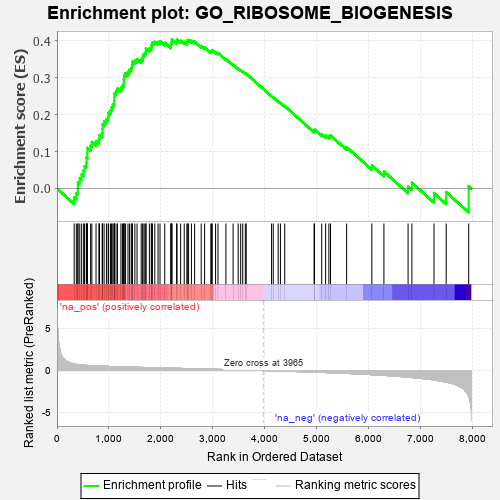
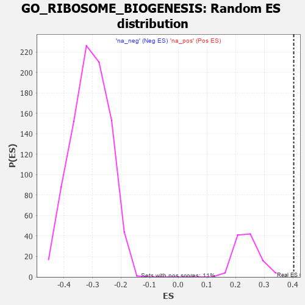

| | | Dataset | 7d |
| Phenotype | NoPhenotypeAvailable |
| Upregulated in class | na_pos |
| GeneSet | GO_RIBOSOME_BIOGENESIS |
| Enrichment Score (ES) | 0.40306428 |
| Normalized Enrichment Score (NES) | 1.6647352 |
| Nominal p-value | 0.0091743115 |
| FDR q-value | 0.19501065 |
| FWER p-Value | 0.997 |
Table: GSEA Results Summary

Fig 1: Enrichment plot: GO_RIBOSOME_BIOGENESIS
Profile of the Running ES Score & Positions of GeneSet Members on the Rank Ordered List
| PROBE | GENE SYMBOL | GENE_TITLE | RANK IN GENE LIST | RANK METRIC SCORE | RUNNING ES | CORE ENRICHMENT | | 1 | BOP1 | | | 330 | 0.768 | -0.0241 | Yes |
| 2 | RRP15 | | | 372 | 0.722 | -0.0125 | Yes |
| 3 | RPP25 | | | 401 | 0.699 | 0.0002 | Yes |
| 4 | RRP8 | | | 403 | 0.699 | 0.0163 | Yes |
| 5 | RRN3 | | | 438 | 0.667 | 0.0275 | Yes |
| 6 | NIP7 | | | 474 | 0.646 | 0.0381 | Yes |
| 7 | NMD3 | | | 513 | 0.625 | 0.0478 | Yes |
| 8 | WDR12 | | | 530 | 0.620 | 0.0601 | Yes |
| 9 | NLE1 | | | 565 | 0.609 | 0.0700 | Yes |
| 10 | WDR55 | | | 569 | 0.605 | 0.0837 | Yes |
| 11 | DDX56 | | | 584 | 0.600 | 0.0958 | Yes |
| 12 | POP5 | | | 585 | 0.599 | 0.1098 | Yes |
| 13 | NOC2L | | | 647 | 0.578 | 0.1155 | Yes |
| 14 | NOC4L | | | 671 | 0.569 | 0.1258 | Yes |
| 15 | UTP4 | | | 751 | 0.545 | 0.1284 | Yes |
| 16 | GAR1 | | | 806 | 0.530 | 0.1339 | Yes |
| 17 | IMP4 | | | 818 | 0.526 | 0.1447 | Yes |
| 18 | NOL6 | | | 870 | 0.514 | 0.1502 | Yes |
| 19 | WDR75 | | | 874 | 0.513 | 0.1617 | Yes |
| 20 | POP7 | | | 876 | 0.511 | 0.1735 | Yes |
| 21 | NHP2 | | | 906 | 0.505 | 0.1815 | Yes |
| 22 | WDR3 | | | 951 | 0.495 | 0.1874 | Yes |
| 23 | BMS1 | | | 984 | 0.487 | 0.1947 | Yes |
| 24 | NOP9 | | | 993 | 0.485 | 0.2049 | Yes |
| 25 | PWP2 | | | 1030 | 0.477 | 0.2115 | Yes |
| 26 | DDX31 | | | 1050 | 0.474 | 0.2201 | Yes |
| 27 | WDR46 | | | 1074 | 0.468 | 0.2280 | Yes |
| 28 | FCF1 | | | 1100 | 0.463 | 0.2356 | Yes |
| 29 | RRP12 | | | 1102 | 0.463 | 0.2462 | Yes |
| 30 | DDX47 | | | 1103 | 0.463 | 0.2570 | Yes |
| 31 | UTP15 | | | 1135 | 0.457 | 0.2637 | Yes |
| 32 | DDX27 | | | 1163 | 0.452 | 0.2707 | Yes |
| 33 | NSUN5 | | | 1230 | 0.442 | 0.2726 | Yes |
| 34 | WDR36 | | | 1260 | 0.437 | 0.2791 | Yes |
| 35 | NOB1 | | | 1284 | 0.433 | 0.2862 | Yes |
| 36 | UTP18 | | | 1286 | 0.432 | 0.2962 | Yes |
| 37 | DKC1 | | | 1292 | 0.431 | 0.3055 | Yes |
| 38 | UTP25 | | | 1319 | 0.425 | 0.3121 | Yes |
| 39 | EIF2A | | | 1366 | 0.416 | 0.3159 | Yes |
| 40 | DDX51 | | | 1397 | 0.411 | 0.3217 | Yes |
| 41 | NUP88 | | | 1429 | 0.404 | 0.3271 | Yes |
| 42 | LSM6 | | | 1444 | 0.402 | 0.3347 | Yes |
| 43 | WBP11 | | | 1451 | 0.400 | 0.3432 | Yes |
| 44 | DDX28 | | | 1498 | 0.390 | 0.3465 | Yes |
| 45 | PIN4 | | | 1540 | 0.385 | 0.3502 | Yes |
| 46 | SURF6 | | | 1620 | 0.370 | 0.3488 | Yes |
| 47 | IMP3 | | | 1648 | 0.365 | 0.3538 | Yes |
| 48 | ESF1 | | | 1655 | 0.364 | 0.3615 | Yes |
| 49 | MRM2 | | | 1689 | 0.358 | 0.3657 | Yes |
| 50 | DDX18 | | | 1711 | 0.355 | 0.3712 | Yes |
| 51 | ERCC2 | | | 1712 | 0.354 | 0.3795 | Yes |
| 52 | C1D | | | 1777 | 0.341 | 0.3793 | Yes |
| 53 | RPF2 | | | 1814 | 0.335 | 0.3825 | Yes |
| 54 | ERAL1 | | | 1823 | 0.333 | 0.3892 | Yes |
| 55 | DDX52 | | | 1835 | 0.331 | 0.3955 | Yes |
| 56 | UTP20 | | | 1882 | 0.322 | 0.3971 | Yes |
| 57 | TSR1 | | | 1944 | 0.314 | 0.3967 | Yes |
| 58 | HELQ | | | 1982 | 0.307 | 0.3991 | Yes |
| 59 | DDX49 | | | 2073 | 0.295 | 0.3945 | Yes |
| 60 | C1QBP | | | 2189 | 0.278 | 0.3864 | Yes |
| 61 | UTP11 | | | 2195 | 0.277 | 0.3922 | Yes |
| 62 | EFL1 | | | 2207 | 0.276 | 0.3972 | Yes |
| 63 | TFB1M | | | 2212 | 0.275 | 0.4031 | Yes |
| 64 | NSUN4 | | | 2301 | 0.260 | 0.3979 | No |
| 65 | UTP23 | | | 2309 | 0.259 | 0.4030 | No |
| 66 | TBL3 | | | 2379 | 0.248 | 0.4000 | No |
| 67 | NOP16 | | | 2448 | 0.237 | 0.3969 | No |
| 68 | KAT2B | | | 2502 | 0.226 | 0.3954 | No |
| 69 | KRR1 | | | 2504 | 0.226 | 0.4005 | No |
| 70 | RCL1 | | | 2531 | 0.222 | 0.4024 | No |
| 71 | RIOK1 | | | 2586 | 0.215 | 0.4005 | No |
| 72 | NOP2 | | | 2648 | 0.206 | 0.3976 | No |
| 73 | RIOK2 | | | 2775 | 0.187 | 0.3859 | No |
| 74 | PA2G4 | | | 2840 | 0.177 | 0.3819 | No |
| 75 | XPO1 | | | 2960 | 0.156 | 0.3704 | No |
| 76 | NOL10 | | | 2975 | 0.154 | 0.3722 | No |
| 77 | RRP1B | | | 2986 | 0.152 | 0.3744 | No |
| 78 | ABCE1 | | | 3051 | 0.143 | 0.3696 | No |
| 79 | CUL4A | | | 3097 | 0.137 | 0.3671 | No |
| 80 | MRM1 | | | 3250 | 0.114 | 0.3504 | No |
| 81 | DDX3X | | | 3388 | 0.091 | 0.3351 | No |
| 82 | ERI1 | | | 3486 | 0.079 | 0.3246 | No |
| 83 | LSG1 | | | 3534 | 0.070 | 0.3203 | No |
| 84 | NOP10 | | | 3573 | 0.064 | 0.3169 | No |
| 85 | NOLC1 | | | 3623 | 0.056 | 0.3120 | No |
| 86 | SBDS | | | 3640 | 0.053 | 0.3112 | No |
| 87 | NOP56 | | | 4128 | -0.028 | 0.2499 | No |
| 88 | DDX17 | | | 4161 | -0.035 | 0.2467 | No |
| 89 | RRS1 | | | 4256 | -0.051 | 0.2359 | No |
| 90 | RAN | | | 4299 | -0.059 | 0.2320 | No |
| 91 | CEBPZ | | | 4382 | -0.073 | 0.2233 | No |
| 92 | XRCC5 | | | 4946 | -0.187 | 0.1560 | No |
| 93 | PRKDC | | | 4955 | -0.189 | 0.1594 | No |
| 94 | DDX54 | | | 5093 | -0.222 | 0.1472 | No |
| 95 | NSA2 | | | 5168 | -0.241 | 0.1434 | No |
| 96 | DDX21 | | | 5231 | -0.252 | 0.1414 | No |
| 97 | PTEN | | | 5262 | -0.261 | 0.1436 | No |
| 98 | NVL | | | 5572 | -0.338 | 0.1122 | No |
| 99 | MAK16 | | | 6058 | -0.493 | 0.0620 | No |
| 100 | TRAF7 | | | 6290 | -0.571 | 0.0459 | No |
| 101 | KRI1 | | | 6755 | -0.787 | 0.0052 | No |
| 102 | LYAR | | | 6828 | -0.830 | 0.0154 | No |
| 103 | REXO4 | | | 7253 | -1.126 | -0.0123 | No |
| 104 | XRN2 | | | 7488 | -1.384 | -0.0099 | No |
| 105 | MDN1 | | | 7921 | -3.061 | 0.0064 | No |
Table: GSEA details [plain text format]

Fig 2: GO_RIBOSOME_BIOGENESIS: Random ES distribution
Gene set null distribution of ES for GO_RIBOSOME_BIOGENESIS